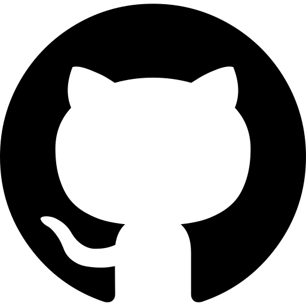
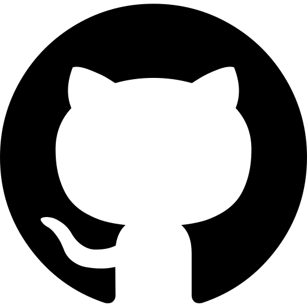

My name is Austin Okray. I'm currently a Data Scientist at CACI. In December 2021, I graduated with an MS in Data Science from the State University of New York at Buffalo (SUNY Buffalo). In Spring 2020, I graduated with a BS in Computer Science with minors in Statistics and Mathematics at the University of Wyoming (UWyo).
Before graduating from UWyo, I was an undergraduate research assistant working in the Machine Learning Group under the supervision of Dr. Chao Lan, working primarily on the fairness problem in machine learning and multi-view anomaly detection. I'm currently investigating multi-view anomaly detection methods, and maintaining a small data page from the UWyo ML group (now found here okray.ml/data). Previously I've developed novel fair kernel methods (paper). Besides fairness, I'm also interested in algorithm design, dimensionality reduction, anomaly detection and learning theory.
I'm a motivated and driven individual who enjoys challenges, learning, and self-teaching. Outside of academia, I enjoy travelling, photography (some photos as a Google Drive link for full resolution), mountain biking, and strategy games.
Here is my CV (or a shorter resume) and LinkedIn. You can reach me at arokray@gmail.com
January 2022: I've started at CACI as a Data Scientist, next stop - Denver, CO!
December 2021: I've graduated with my MS in Data Science from SUNY Buffalo!
September 2021: F4A's demo period is over, thanks for trying it out!
July 2021: The Fairness for All (F4A) trial is now live! Check it out at f4a.okray.ml, or check it out on Github if you're interested in using it/contributing!
May 2020: I've officially graduated from UWyo! See you in Buffalo, NY in September! (COVID Pending)
March 2020: I've been accepted to the MS in Data Science program at SUNY Buffalo!
Sep 2019: I'll be a TA for COSC4550: Introduction to Artificial Intelligence along with Zhen Wang! Come see me in EN4084A if you have questions or are interested in AI/ML!
Aug 2019: Our paper "Fair Kernel Regression via Fair Feature Embeddings in Kernel Space" was accepted for oral presentation at ICTAI'19 - see you in Portland!
Jun 2019: Our manuscript on fair kernel regression is on arXiv!
May 2019: I will serve as a session chair at IJCNN'19. See you in Budapest!
[ICTAI'19] Austin Okray, Hui Hu and Chao Lan. Fair Kernel Regression via Fair Feature Embeddings in Kernel Space. International Conference on Tools with Artificial Intelligence (ICTAI), 2019. https://arxiv.org/abs/1907.02242. Code available here. (Acceptance Rate: 26%)
[IJCNN'19] Zhen Wang, Suresh Muknahallipatna, Maohong Fan, Austin Okray and Chao Lan. Music classification using an improved CRNN with multi-directional spatial dependencies in both time and frequency dimensions. International Joint Conference on Neural Network (IJCNN), 2019.
*([IP] = In Progress)